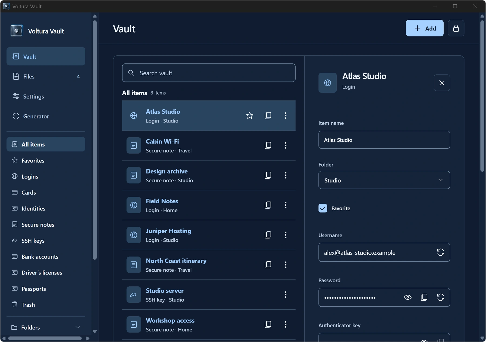
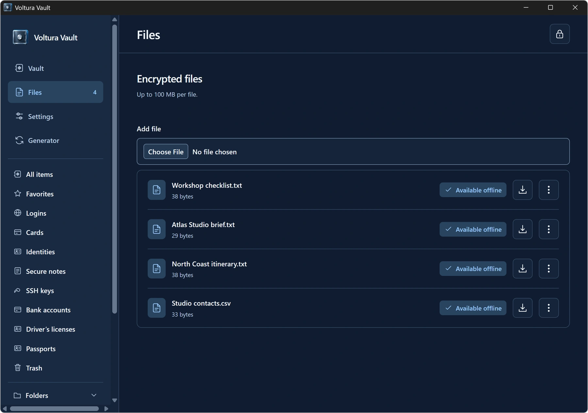

Import and organize
Preview personal Bitwarden JSON exports, including password-protected exports. Organize items with folders, search and custom fields, and generate passwords, passphrases and usernames.
OPEN SOURCE · SELF-HOSTED
Keep passwords, secure notes, SSH keys and files in one place. Your device encrypts them before they sync to your server.
Public alpha for Windows x64, Ubuntu 24.04 amd64 and Apple Silicon macOS. Use synthetic data to try the alpha.

Actual app screenshots with fictional vault contents.


Preview personal Bitwarden JSON exports, including password-protected exports. Organize items with folders, search and custom fields, and generate passwords, passphrases and usernames.
Edit cached items and sync when you reconnect. Download encrypted attachments up to 100 MB on demand, keep selected files offline or delete them with confirmation.
Set up the private HTTPS API with the Docker kit. Back up and restore with restic. You can also host the browser app separately.